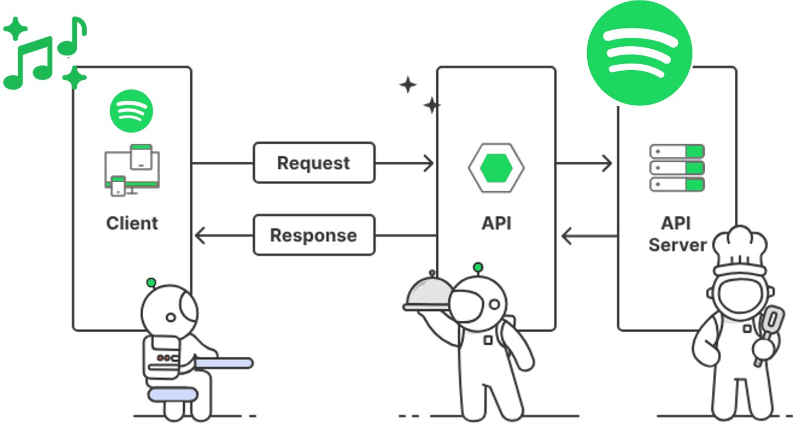

Server-side Programming:
Backend Concepts
Introduction to Backend

- Backend development refers to the part of web development that focuses on creating the server-side logic and functionality of a website or web application.
- It involves writing code that runs on the server and communicates with the front-end, which is what users interact with.
Key aspects of backend development include:
HTTP Method
- HTTP (Hypertext Transfer Protocol) methods are verbs that define the actions that can be performed on a given resource.
- They are an essential part of the HTTP protocol, used for communication between clients (such as web browsers) and servers.
HTTP Method List:
We are only covering 4 HTTP methods, here is a complete list of HTTP methods.
API
-
Introduction
- An API is a set of rules and protocols that allows different software applications to communicate with each other.
- It defines the methods and data formats that applications can use to request and exchange information.
- APIs are used extensively in software development to enable integration between different systems, services, or platforms.
-
Protocols
- API protocols are standards and conventions that define how communication occurs between different software applications or services.
REST (Representational State Transfer):
GraphQL:
WebHooks:
SOAP (Simple Object Access Protocol):
WebSockets:
gRPC:
-
Design:
- Designing a good API is crucial for ensuring that developers can easily understand and use it effectively.
-
Performance:
- Ensuring API performance is crucial for providing a seamless user experience and maintaining the reliability of your services.
-
Security:
- Ensuring the security of your API is crucial to protect sensitive data and maintain the integrity of your application.
TypeScript
- TypeScript is a strongly typed superset of JavaScript that adds optional static types to the language.
- It provides a more robust development experience by enabling developers to catch errors early through type checking, and it offers better tooling with features like autocompletion and code navigation.
- By enforcing type checks, TypeScript helps detect and eliminate potential bugs early in the development process, which leads to more stable and reliable code.
- TypeScript’s features such as interfaces, generics, and access modifiers (public, private, protected) support the development of large-scale applications, It helps in designing and maintaining complex systems.
- TypeScript is a superset of JavaScript, meaning any valid JavaScript code is also valid TypeScript code.
Express JS
- Is a minimal and flexible web application framework for Node.js.
- It provides a robust set of features for building web and mobile applications, as well as APIs (Application Programming Interfaces).
- One of the most popular frameworks for Node.js due to its simplicity, flexibility, and performance.

Express JS Features
-
Middleware:
- Middleware functions are at the core of Express.js.
- They are functions that have access to the request object (req), the response object (res), and the next middleware function in the application's request-response cycle.
- Middleware functions can perform tasks such as logging, authentication, data parsing, and error handling.
Useful Middleware Functions:
-
app.use(express.static('public'));- Built in middleware that serves static files such as HTML, CSS, JavaScript, images, and other assets. -
app.use(express.json());- Built in middleware that parses the incoming request body if it contains JSON data and populates the req.body property with the parsed JSON object. This makes it easier to work with JSON data in your Express routes. -
app.use(express.urlencoded({ extended: true }));- Built in middleware that parses the incoming request body if it contains URL-encoded data (e.g., data submitted from an HTML form) and populates the req.body property with the parsed data. - Third party middleware - Middleware functions or modules that are developed by the community or third-party developers to extend the functionality of Express applications. These third-party middleware modules can be installed via npm and then integrated into your Express application using app.use() just like built-in middleware.
-
Routing:
- Express provides a simple yet powerful routing mechanism that allows developers to define routes based on HTTP methods (GET, POST, PUT, DELETE, etc.) and URL patterns.
- Routes can handle requests and return responses, making it easy to create RESTful APIs and web applications.
-
HTTP Utilities:
- Express provides utility methods and properties to work with HTTP requests and responses more efficiently.
- These include methods for setting HTTP headers, sending status codes, redirecting requests, and sending various types of responses (JSON, HTML, etc.).
-
Static Files Serving:
- Express makes it easy to serve static files such as HTML, CSS, JavaScript, images, and other assets.
- Developers can use the express.static middleware to serve files from a specified directory, making it suitable for serving client-side resources in web applications.
-
Templating Engines:
- Although Express itself does not include a built-in templating engine, it allows developers to integrate popular templating engines such as EJS (Embedded JavaScript), Handlebars, Pug (formerly known as Jade), and Mustache.
- Templating engines enable the dynamic generation of HTML content based on data.
-
Error Handling:
- Express provides built-in error handling mechanisms to catch and handle errors that occur during the request-response cycle.
- Developers can define error-handling middleware functions to centralize error handling logic and improve code maintainability.
-
Modularity and Extensibility:
- Express is designed to be modular and extensible, allowing developers to add additional functionality through third-party middleware and plugins.
- This modularity makes it easy to integrate with other Node.js modules and frameworks, enhancing the capabilities of Express-based applications.
-
Community and Ecosystem:
- Express has a large and active community of developers who contribute to its ongoing development, create middleware packages, and provide support through forums, documentation, and tutorials.
- This vibrant ecosystem makes it easier for developers to build and maintain Express.js applications.